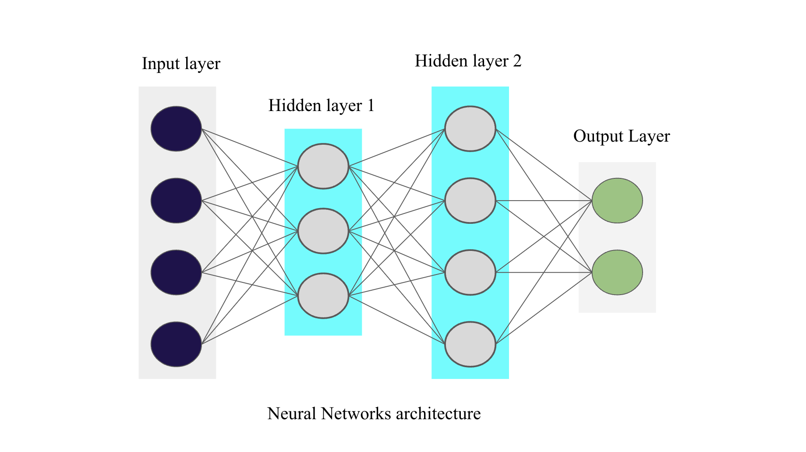

2.3. Terminologies Part-1
Contents
2.3. Terminologies Part-1#
In general, Neural networks better known as MLP (Multi Layers Perceptron), as the word itself suggest, is a type of model organized into multiple layers (in the form of perceptron) in which information flows from the input layer to the output layer only.
Each layer consists of a defined number of neurons. These layers are:
Input layer
Hidden layer(s)
Output layer
The following image represents a neural network with 4 neurons in the input layer, 3 neurons in the first hidden layer, 4 in the second hidden layer and 2 in the output layer.

In perceptron model, we only had an
input layerand anoutput layer
Why to add hidden layers?
Hidden layers allow for the function of a neural network to be broken down into specific transformations of the data. Like if we want to recognise a person’s face using an image of a face as input, then may be we can keep several hidden layers before the output layer where one hidden layer will give priority to the eyes feature , one will give it to the nose, and the other one to lips and so on. That’s why adding hidden layers are important!
In general, hidden layers are required if and only if the data must be separated non-linearly. All thanks to the Universal approximation theorem which states that “MLP” with a single hidden layer containing a finite number of neurons can approximate any continuous function \(f\) of this world.
The main take-out is that deep learning allows solving any problem which can be mathematically expressed!
Notations to be used#
We will use \(l\) to denote the \(l^{th}\) layer where \(l=0,1,2,...,L\) where \(l=0\) denotes the Input layer, \(l=1\) is the first hidden layer, \(l=2\) is the second hidden layer and so on. Keep in mind that \(l=L\) denotes the output layer. So, in the above image we have \(L=3\).
Note: \(\odot\) means element wise multiplication (also called Hadamard product)
For Input layer (\(l=0\)),
\(X\): shape \((m, d)\) is the original dataset having \(m\) samples (rows) and \(d\) features (columns).
\(z_0\): same as \(X\)
\(a_0\): same as \(X\)
For Hidden layer (\(l=1,2,...L-1\)), let \(h_l\) be the number of neurons in the respective hidden layer. Then,
\(W_l\): Weight matrix of shape \((h_{l-1}, h_l)\) except for \(W_1\) whose shape will be \((d, h_1)\)
\(b_l\): Bias of shape \((h_l, 1)\)
\(z_l\): weighted sum of previous output \(a_{l-1}\) and current weight \(W_l\) of shape \((m, h_l)\)
\(a_l\): size is same as \(z_l\)
Note: Although \(W_l\) is the weight associated with the outputs of the previous layer (\(l-1\)), we use it as \(W_l\) to make the computations (as well as code) looks cleaner and convenient to write.
For Output layer (\(l=L\)),
\(y\): shape \((m, c)\) is the original target variable having \(m\) samples and \(c\) columns. (For example in case of classification, this \(c\) can denote the number of classes of the target variable after one hot encoding).
\(W_L\): Weight matrix of shape \((h_{L-1}, c)\)
\(b_L\): Bias of shape \((c, 1)\)
\(z_L\): weighted sum of previous output \(a_{L-1}\) and current weight \(W_L\). Shape of \(z_L\) is \((m, c)\)
\(a_L\): size is same as \(z_L\). It denotes the final prediction (\(\hat{y}\))
Finally, let \(f_l(x)\) denote the activation function (link to previous chapter) used in the \(l^{th}\) layer and \(f'_l(x)\) be its derivative.
Parameter’s initialization#
The first step after defining the architecture of the neural network is parameter initialization. It is equivalent to injecting initial noise into the model’s weights.
Zero initialization: We initialize the parameters with 0’s everywhere i.e: \(W=0\) and \(b=0\)
With large or \(0\) initialization of weights (\(W\)), not significant result is obtained. Even if we use appropriate initialization of weights it is probable that training process is going to take longer time.
Random initialization: It is commonly used initialization technique and consists of injecting random noise in the parameters.
Three of the most famous initialization methods are:
Note: \(\text{size}_{l}\) is the number of neurons in the \(l^{th}\) layer.
He initialization (for ReLU activation)
We just simply multiply random initialization with:
Xavier initialization (for tanh activation)
It is same as He initialization but it is used for tanh() activation function. In this method 2 is replaced with 1.
Glorot (for tanh activation)
It is same as Xavier’s initialization but with a different variance